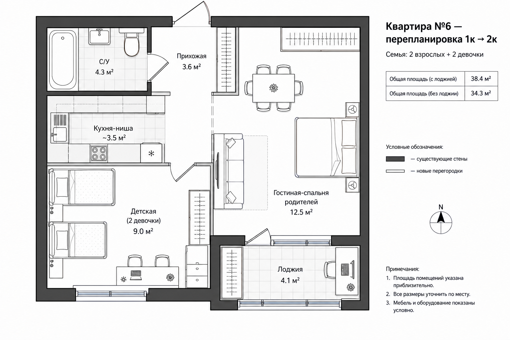
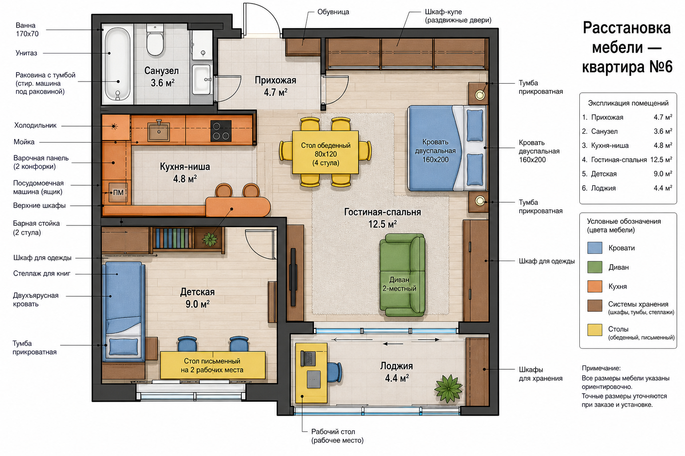
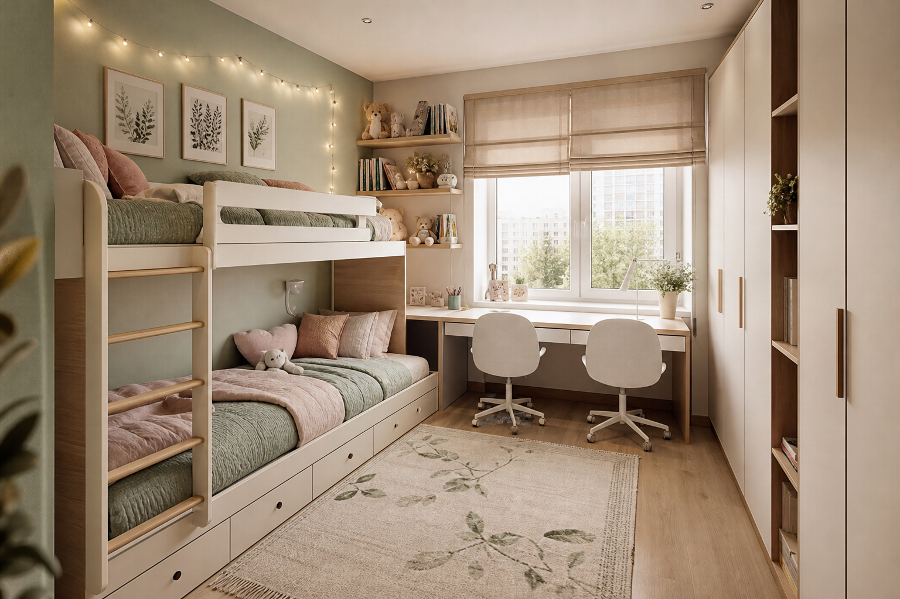
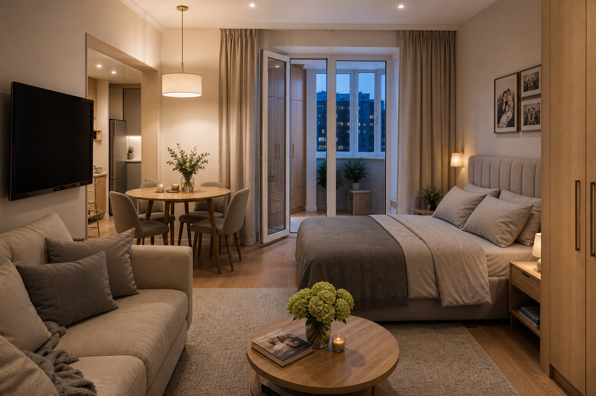
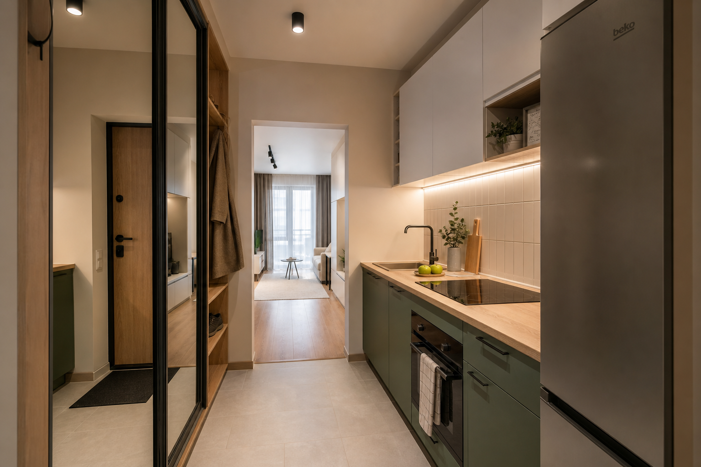
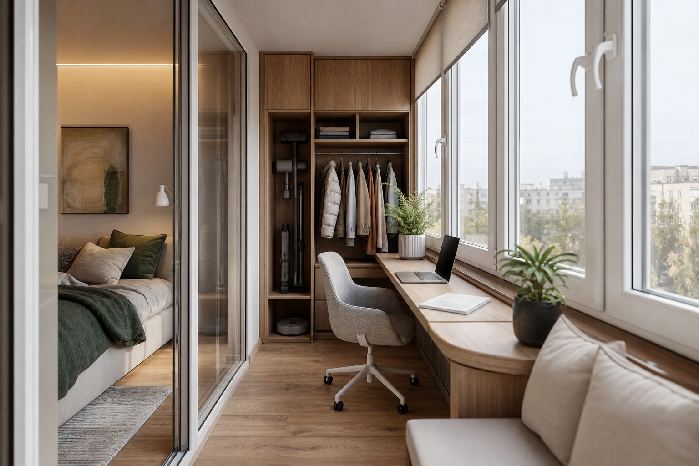

Две отдельные комнаты: детская для двух девочек и гостиная-спальня родителей.
Кухня вынесена в нишу у мокрых стояков, лоджия утеплена под кабинет и хранение.
2жилые комнаты
4человека
34.3м² без лоджии
38.4м² с лоджией
Концепция перепланировки
Сохраняем санузел и несущие стены. Бывшую кухню отдаём детям (есть окно),
кухню переносим к санузлу в компактную нишу, большую комнату зонируем под
родителей и общую жизнь семьи.

План перепланировки: детская + гостиная-спальня + кухня-ниша
Детская
~9.0 м² · бывшая кухня
Двухъярусная кровать
Общий стол у окна на двоих
Шкаф и полки для вещей
Гостиная-спальня
~12.5 м² · родители
Кровать 160×200
Диван и ТВ-зона
Обеденный стол на 4
Кухня-ниша
~3.5 м² · у санузла
Варочная панель + мойка
Холодильник и шкафы
Барная стойка на 2
Лоджия + С/У
4.1 + 4.3 м²
Лоджия: кабинет и хранение
Санузел без переноса стояков
Прихожая со шкафом-купе
Важно: перенос кухни к санузлу обычно согласуется проще на 1 этаже
(под квартирой нет жилых помещений). Перед ремонтом нужно согласовать
перепланировку в местной администрации / через МФЦ.
Расстановка мебели
Мебель подобрана под узкие проходы и хранение для четверых: ярусная кровать
у девочек, зонирование ковром и светом у родителей, максимум встроенных шкафов.

Детальный план расстановки мебели с подписями
Интерьеры
Единый стиль: тёплое дерево, мягкий шалфейный акцент, светлые стены —
визуально расширяет маленькие комнаты и связывает всю квартиру.

Детская: двухъярусная кровать, стол у окна, шкаф и мягкий пастельный декор

Гостиная-спальня родителей: кровать, диван, стол на четверых

Кухня-ниша у санузла и прихожая со шкафом-купе

Лоджия: рабочее место и системы хранения
Что меняется в конструкциях
Сносим/переносим тонкую перегородку бывшей кухни — на её месте дверь в детскую.
Новая перегородка отделяет детскую от гостиной-спальни (лёгкая каркасная).
Кухня переносится к стоякам санузла: мойка и техника в нише прихожей.
Лоджия утепляется, тёплый контур сохраняется (без полного объединения без согласования).
Без изменений: санузел, несущие стены, окна фасада.